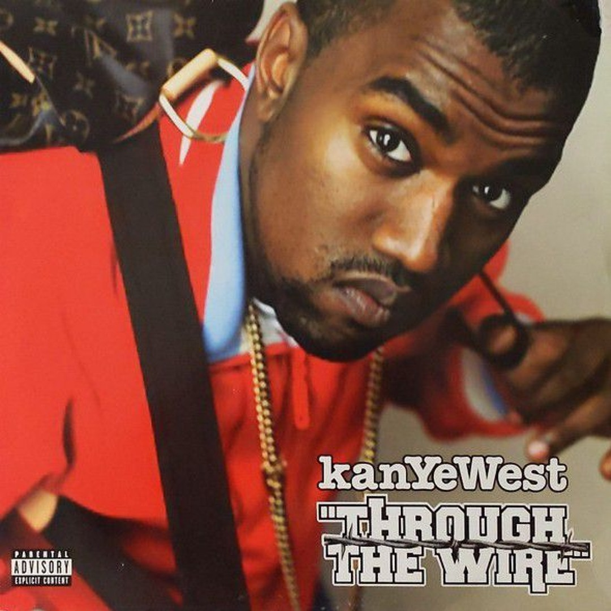
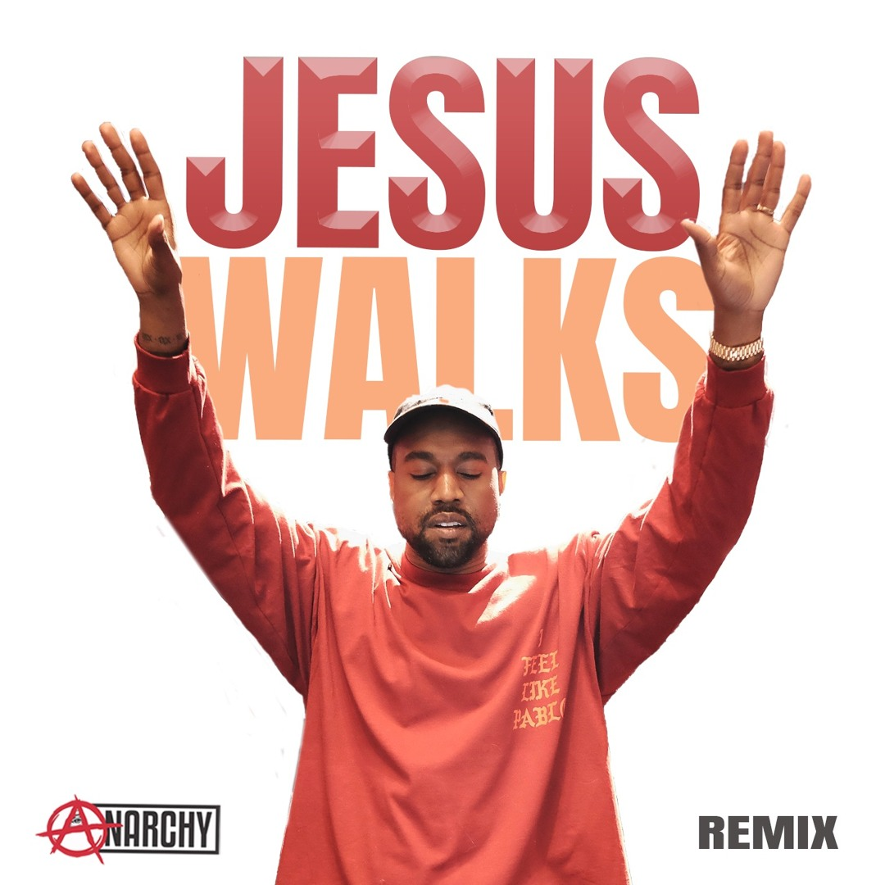
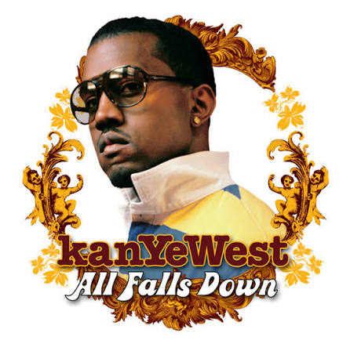

A Criação, Sucesso e a Revolução Narrativa
Lançado em 2004, The College Dropout estreou em #2 na Billboard 200 e vendeu mais de 440 mil cópias na primeira semana, conquistando o Grammy de Melhor Álbum de Rap.
A Diferença na Mensagem: Numa época em que o rap comercial era dominado por narrativas de ostentação, crime e violência urbana, Kanye West trouxe uma perspectiva totalmente inovadora. Ele abordou temas como religiosidade, autoconfiança, consumismo, os dilemas da educação tradicional e o valor da família, provando que um rapper vindo da classe média com ideias conscientes podia dominar o topo das paradas mundiais.
Músicas em Destaque

1. Through The Wire
Gravada com a mandíbula amarrada por arames após um acidente grave de carro, demonstrando sua determinação e visão artística inabalável.

2. Jesus Walks
Uma das faixas mais ousadas da história do Hip-Hop, levando a fé Cristã diretamente para as rádios e rádios de clube.

3. All Falls Down
Uma crítica brilhante e sincera ao materialismo, à insegurança pessoal e aos padrões impostos pela sociedade moderna.